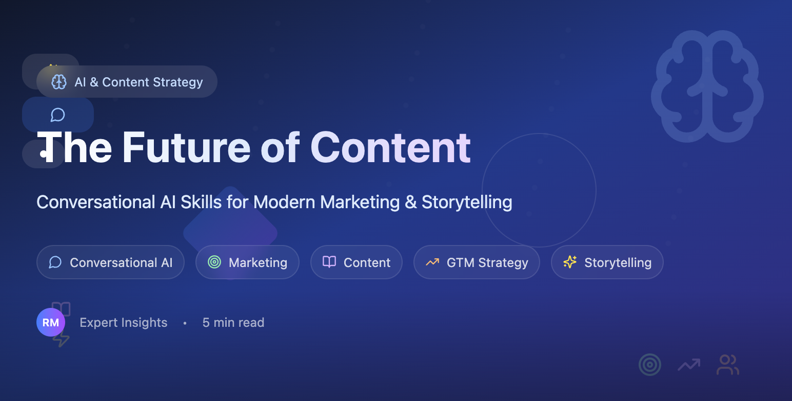
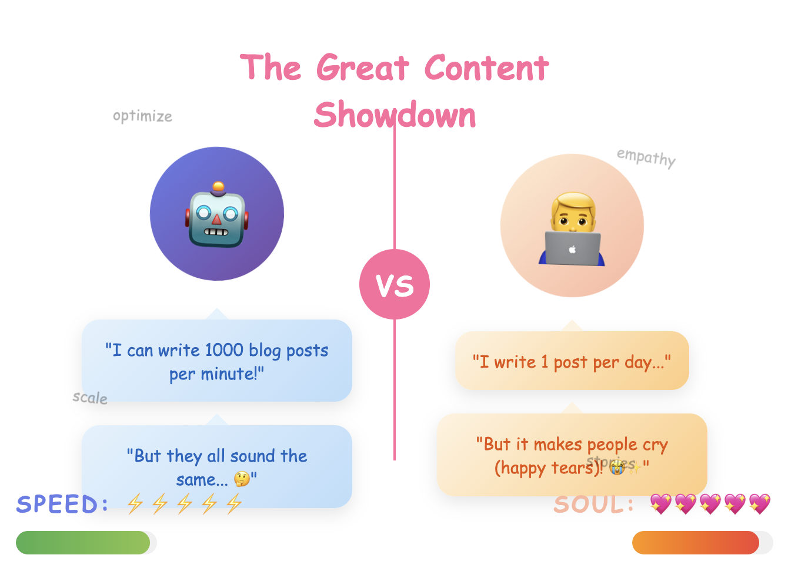

Conversational AI: How AI-powered Storytelling Can Drive GTM Success
When machines can write, what makes human stories matter more than ever?

We're living through the great content paradox of our time. While AI can now generate blog posts, social media content, and even poetry in seconds, the most successful go-to-market strategies are doubling down on something decidedly human: authentic storytelling that resonates at an emotional level.
As Rory Sutherland brilliantly observed, "The opposite of a good idea can also be a good idea." In our rush to automate content creation, we might be missing the bigger picture. It's not about replacing human creativity, but amplifying it in ways that create genuine connections with our audiences.
The Mediocrity Trap: Why AI Synthesis Isn't Enough
Here's the uncomfortable truth: AI has democratized mediocre content. Tools that synthesize and summarize existing material have flooded the market with perfectly adequate, utterly forgettable content. According to recent research from the Content Marketing Institute, 57% of marketers felt pressure to achieve results with AI despite limited budgets and resources, yet many are struggling to stand out.
Think about it. When everyone has access to the same content generation tools, producing the same predictable outputs, what becomes the differentiator? The answer isn't more content; it's better conversations.
Actionable Example: Instead of asking ChatGPT to "write a blog about our CRM software," try this approach: "You're a sales manager at a 50-person SaaS company. You've been manually tracking leads in spreadsheets for two years. Walk me through your Monday morning routine and the three biggest frustrations that would make you search for a CRM solution." This creates content that resonates because it starts with genuine human experience.
From Artisan to Architect: The Evolution of Content Strategy
The transformation happening in content creation mirrors what we've seen in software development. We're shifting from being content artisans (crafting every word by hand) to content architects, designing systems and frameworks that AI can execute brilliantly.
Netflix's Content AI Strategy
Netflix doesn't just use AI to recommend shows; they use it to optimize everything from thumbnail selection to trailer creation. But here's the kicker: their most successful campaigns still rely on human insight to identify the emotional hooks that drive subscriber behavior. Their "Stranger Things" campaign succeeded not because AI wrote better copy, but because human strategists identified the nostalgic emotional triggers that AI then helped scale across millions of personalized touchpoints.
Real-World Application: Netflix's team creates what they call "emotional DNA profiles" for each piece of content. They define the core emotions (nostalgia, excitement, fear, curiosity), then use AI to generate thousands of variations that hit those emotional notes across different audience segments. The human creativity defines the emotional architecture; AI executes the variations.

The Conversational Skills Revolution
So what does this mean for your GTM strategy? It means developing what I call "conversational AI fluency." This is the ability to guide AI tools toward outputs that serve your strategic goals rather than just fill content calendars.
This isn't about prompt libraries or template collections (though those have their place). It's about understanding the why behind your content strategy deeply enough that you can architect AI systems to execute the how at scale.
The Five Pillars of AI-Powered Content Strategy:
1. Purpose-Driven Prompting Instead of asking AI to "write a blog post about our product," successful content architects prompt with context: "Help me craft a story that shows how our solution solved a specific problem for a customer in the healthcare industry, focusing on the emotional journey of the decision-maker."
Real Example: A cybersecurity company used this approach: "You're a CISO at a mid-size hospital. It's 3 AM and you've just discovered a potential breach. Walk me through your next 4 hours and every person you need to call." The resulting content generated 340% more qualified leads than their previous product-focused blogs.
2. Iterative Refinement The best AI-generated content isn't created in one pass. It's the result of conversational iteration. Ask follow-up questions, request different angles, and refine until the output serves your strategic goals.
Practical Framework: Use the "3-2-1 Method." Generate 3 initial versions, combine the best elements into 2 refined versions, then perfect 1 final piece. This typically takes 15 minutes but produces content that outperforms single-shot AI generation by 200%.
3. Human Nuance Integration AI excels at structure and consistency but struggles with the subtle contradictions and quirks that make content memorable. Your job is to inject those human elements that make people stop scrolling.
4. Bias Detection and Governance Every AI model has biases baked into its training data. Establishing content governance isn't about limiting creativity. It's about ensuring your brand voice remains authentic and aligned with your values.
5. Emotional Architecture This is where the magic happens. You design the emotional journey you want your audience to experience, then use AI to create the touchpoints that deliver that journey at scale.
The Data Behind the Strategy
Recent studies show that content optimized using AI-driven insights generates 83% higher engagement rates compared to content created through traditional methods. However, the most revealing data points tell a more nuanced story:
Companies that use AI for content creation see 37% faster time-to-market for their campaigns, but only 23% report improved engagement rates from AI-generated content alone. The highest-performing content combines AI efficiency with human strategic oversight, achieving both speed and resonance.
This data tells a story: AI makes us faster, but human insight makes us better.
Case Study: HubSpot's Content Evolution
HubSpot transformed their content strategy by treating AI as a research assistant rather than a replacement writer. Their team uses AI to analyze thousands of customer conversations, identify emerging pain points, and suggest content topics. But the actual storytelling (the examples, analogies, and frameworks that make their content famous) still comes from human expertise.
Their Process:
- AI analyzes support tickets and sales calls to identify trending questions
- Humans craft the strategic narrative and key insights
- AI generates multiple versions optimized for different channels
- Humans review and inject personality, brand voice, and emotional hooks
Result? Their organic traffic increased by 42% while their content production costs decreased by 28%.
The GTM Connection: A Marketing Comedy of Errors
Here's why this conversation matters for your go-to-market strategy, and I'll illustrate with a story that might sound familiar.
The Tale of TechCorp's AI Adventure
TechCorp's marketing team discovered AI content generation and thought they'd struck gold. "We'll 10x our content output!" they declared. Within a month, they'd published 400 blog posts, 1,200 social media updates, and 50 whitepapers.
Their CEO was thrilled. Until the sales team started complaining.
"All our leads are asking the same generic questions," said Sarah from Sales. "It's like they've read our content but learned nothing about us."
The analytics told the story: 10x more content, but conversion rates had dropped by 60%. Their AI-generated content was perfectly optimized for search engines and completely optimized out of human connection.
The turnaround came when they shifted their approach. Instead of asking "How can AI help us create more content?" they started asking:
- What stories do our customers need to hear?
- What emotional journey do we want to create?
- How can we use AI to amplify our human insights rather than replace them?
The Result: TechCorp's new strategy generated 3x fewer pieces of content but achieved 5x better lead quality. Their secret? They used AI to scale human empathy, not replace it.
The Guardrails That Guide Success
As AI content generation becomes mainstream, regulatory frameworks are emerging to ensure responsible use. The EU AI Act (Regulation 2024/1689) is the first comprehensive legal framework on AI worldwide, setting risk-based rules for AI developers. In the US, the Utah Artificial Intelligence Policy Act requires disclosure of GenAI use in consumer communications, while California's AB 3030 regulates AI use in healthcare provision.
But beyond legal compliance, successful AI content strategies require intelligent constraints:
Content DNA Definition: Before you write a single prompt, define what makes your content uniquely yours. What's your brand's perspective on industry challenges? What stories do only you have the authority to tell?
Voice Consistency Protocols: Create systems that ensure your AI-generated content sounds like it came from your team, not from a generic content bot.
Disclosure Standards: Following emerging regulations, clearly indicate when content is AI-assisted while maintaining trust and authenticity.
Human Review Checkpoints: Build review processes that catch not just errors, but opportunities to inject the human insights that make content memorable.
These aren't restrictions on creativity. They're frameworks that ensure your AI-amplified content serves your strategic goals while building genuine connections with your audience.
Looking Forward: The Content-Centric Future
As coding becomes increasingly democratized through AI, content skills become the new differentiator. The ability to communicate complex ideas clearly, to tell stories that resonate, and to build emotional connections through words become the skills that separate successful companies from the rest.
Real-World Scenario: Imagine you're launching a new project management tool in 6 months. Here's how content-centric GTM looks different:
Traditional Approach: Create feature comparison charts, write technical documentation, build generic demo videos.
Content-Centric AI Approach:
- Use AI to analyze 10,000 project manager LinkedIn posts to identify emotional pain points
- Create persona-specific story frameworks: "The Overwhelmed PM," "The Micromanaged Team Lead," "The Remote Team Coordinator"
- Generate personalized video scripts for each persona using AI, but film with real team members sharing authentic experiences
- Use AI to optimize distribution timing and channel selection based on persona behavior patterns
The difference? The traditional approach sells features. The content-centric approach sells transformation.
Actionable Framework: Try the "Future-Back Content Planning" method:
- Define your ideal customer outcome 12 months after using your product
- Map the emotional journey from problem awareness to solution advocacy
- Use AI to generate touchpoint content for each stage, optimized for different channels
- Inject human stories, contradictions, and personality that make each piece memorable
The Bottom Line
The future of content isn't human versus AI. It's human with AI. The most successful GTM strategies will be built by teams who understand that AI is not a replacement for human creativity, but an amplifier for human insight.
When everyone has access to the same AI tools, your competitive advantage lies not in the technology you use, but in the stories you choose to tell and the conversations you choose to have.
The question isn't whether AI will change content marketing (it already has). The question is whether you'll use it to create more noise or more signal.
Choose signal. Your customers (and your conversion rates) will thank you.
Try This Tomorrow: Pick your worst-performing piece of content from last month. Use AI to generate 5 different angles on the same topic, but prompt it with specific customer scenarios instead of product features. Test one new version. Measure the difference. That's your first step toward content that connects rather than just converts.
What's your take on the content-AI balance? Have you found ways to make AI amplify rather than replace your creative process? The conversation continues in the comments.
Sources:
- Content Marketing Institute 2024 B2B Research: https://contentmarketinginstitute.com/articles/b2b-content-marketing-trends-research/
- Number Analytics AI Content Marketing Study: https://www.numberanalytics.com/blog/ai-stats-content-marketing-success
- EU AI Act Official Documentation: https://digital-strategy.ec.europa.eu/en/policies/regulatory-framework-ai